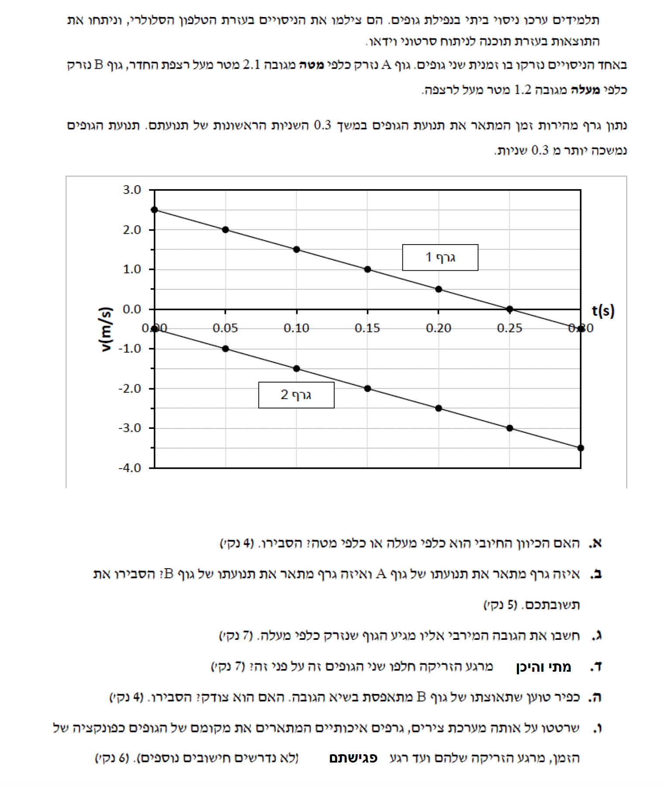

נתון גרף המתאר את המהירות כתלות בזמן עבור שני גופים הנזרקים אנכית. בשני הגרפים, השיפוע הוא שלילי וקבוע. הגופים נמצאים במצב של נפילה חופשית (בהשפעת כוח הכובד בלבד).
עלינו לקבוע האם הכיוון החיובי של ציר המקום (ציר ה-y) שנבחר לתיאור התנועה הוא כלפי מעלה או כלפי מטה, ולהסביר את קביעתנו.
נשתמש בהגדרת התאוצה מהקינמטיקה: \( a = \frac{\Delta v}{\Delta t} \). אנו יודעים כי בגרף מהירות-זמן, שיפוע הישר מייצג את התאוצה של הגוף. בנוסף, נסתמך על העיקרון הדינמי לפיו בנפילה חופשית קרובה לפני כדור הארץ, הגוף מאיץ תמיד כלפי מטה בשיעור קבוע של כ- \( g = 10 \text{ m/s}^2 \).
נחשב את תאוצת הגופים על ידי מציאת שיפוע הגרף. ניקח שתי נקודות נוחות מגרף 1, לדוגמה \( (t_1=0, v_1=2.5) \) ו- \( (t_2=0.25, v_2=0) \):
מצאנו כי התאוצה של הגופים היא נגטיבית (שלילית). מכיוון שאנו יודעים שווקטור תאוצת הנפילה החופשית (כוח הכובד) מכוון תמיד כלפי מטה, והתאוצה שקיבלנו היא בעלת סימן מינוס, המסקנה ההכרחית היא שהכיוון החיובי של הציר מוגדר הפוך מכיוון תאוצת הכובד.
גוף A נזרק כלפי מטה מגובה של \( 2.1 \text{ m} \). גוף B נזרק כלפי מעלה מגובה של \( 1.2 \text{ m} \). מהסעיף הקודם, אנו יודעים שהציר החיובי מכוון כלפי מעלה.
להתאים איזה מבין שני הגרפים (גרף 1 או גרף 2) מתאר את תנועתו של גוף A, ואיזה מתאר את תנועתו של גוף B.
העיקרון כאן הוא קריאת תנאי ההתחלה מתוך הגרף, ספציפית המהירות ההתחלתית \( v_0 \) (המהירות בזמן \( t=0 \)), והשוואתה לנתוני השאלה תוך התחשבות בכיוון הציר שקבענו.
מכיוון שקבענו שהכיוון החיובי הוא כלפי מעלה:
אנו עוסקים בגוף B. נתוניו ההתחלתיים: מקום התחלתי \( y_0 = 1.2 \text{ m} \), מהירות התחלתית (מתוך גרף 1) \( v_0 = 2.5 \text{ m/s} \), ותאוצה \( a = -10 \text{ m/s}^2 \). מתוך הגרף ניתן גם לראות שהמהירות מתאפסת \( (v=0) \) בזמן \( t = 0.25 \text{ s} \).
את הגובה המרבי שאליו מגיע גוף B יחסית לפני הרצפה (נקודת האפס של הציר).
נשתמש בנוסחת המקום כתלות בזמן לתנועה שוות תאוצה מתוך דף הנוסחאות: \( x = x_0 + v_0 t + \frac{1}{2}at^2 \). (אנו מסמנים את המקום באות y מכיוון שמדובר בציר אנכי). עיקרון פיזיקלי חשוב: הגוף מגיע לגובהו המרבי בדיוק ברגע שבו מהירותו הרגעית מתאפסת.
על פי הגרף, המהירות של גוף B שווה לאפס בנקודת הזמן \( t = 0.25 \text{ s} \). נציב זמן זה, יחד עם שאר הנתונים, במשוואת המקום-זמן:
נעגל את התוצאה הסופית ל-3 ספרות מהותיות כנדרש:
עבור גוף A: \( y_{0A} = 2.1 \text{ m} \), \( v_{0A} = -0.5 \text{ m/s} \), \( a = -10 \text{ m/s}^2 \).
עבור גוף B: \( y_{0B} = 1.2 \text{ m} \), \( v_{0B} = 2.5 \text{ m/s} \), \( a = -10 \text{ m/s}^2 \).
שני הגופים נזרקים באותו הזמן, כלומר ב- \( t_0 = 0 \).
מתי (הזמן t) והיכן (המקום y) חולפים שני הגופים זה על פני זה.
נרכיב פונקציית מקום-זמן \( x = x_0 + v_0 t + \frac{1}{2}at^2 \) עבור כל גוף בנפרד. התנאי לחלוף זה על פני זה הוא הימצאות באותו מקום באותו זמן, כלומר נדרוש \( y_A(t) = y_B(t) \).
נרשום את משוואות התנועה של שני הגופים:
נשווה בין המשוואות כדי למצוא את זמן הפגישה:
ניתן לראות שהאיבר החסר \( -5t^2 \) מצטמצם משני אגפי המשוואה (מכיוון ששני הגופים נתונים לאותה תאוצה במקביל). נקבל:
כעת, כדי למצוא את המקום בו הם חולפים, נציב את הזמן שמצאנו באחת המשוואות (למשל, במשוואה של גוף A):
כפיר טוען שתאוצתו של גוף B מתאפסת בשיא הגובה, כלומר \( a = 0 \).
לקבוע האם כפיר צודק, ולספק הסבר פיזיקלי מנומק המבוסס על כוחות.
נשתמש בחוק השני של ניוטון הקושר בין הכוחות הפועלים על גוף לתאוצתו: \( \sum F = ma \). כמו כן, נזכור שכוח הכבידה הפועל על גוף סמוך לכדור הארץ הוא \( F_g = mg \).
כדי לבחון את התאוצה, נשרטט תרשים כוחות (FBD) עבור הגוף בשיא הגובה:
על פי תרשים הכוחות, הכוח היחיד הפועל על הגוף (בהזנחת התנגדות האוויר, כנהוג בנפילה חופשית) הוא כוח הכבידה השואף להורידו מטה. נרשום את משוואת הכוחות לפי החוק השני של ניוטון:
ניתן לראות שהתאוצה שווה ל- \( -g \) לאורך כל תנועת הגוף, לרבות בשיא הגובה. העובדה שהמהירות הרגעית בשיא הגובה היא אפס \( (v=0) \) אין משמעותה שהתאוצה אפס. אילו התאוצה הייתה אפס, הגוף היה נשאר לרחף בשיא הגובה באוויר במנוחה לנצח!
משוואות המקום זמן של שני הגופים (מסעיף ד'):
\( y_A(t) = 2.1 - 0.5t - 5t^2 \)
\( y_B(t) = 1.2 + 2.5t - 5t^2 \)
זמן ומיקום המפגש: \( t = 0.3 \text{ s} , y = 1.5 \text{ m} \).
לשרטט על אותה מערכת צירים גרפים איכותיים המתארים את מיקומם של שני הגופים כפונקציה של הזמן, מרגע הזריקה ועד רגע פגישתם ברצפה (y=0).
מכיוון שהמשוואות הן ממעלה שנייה מהצורה \( y = at^2 + bt + c \), הגרפים יהיו צורות של פרבולות. מכיוון שהתאוצה שלילית (המקדם של \( t^2 \) הוא -5), אלו פרבולות "בוכות" (פתוחות כלפי מטה).
נמצא תחילה מתי כל גוף פוגע ברצפה (משווים את המקום ל-0):
כעת, נשרטט את הגרפים. נשים לב לנקודות החשובות: